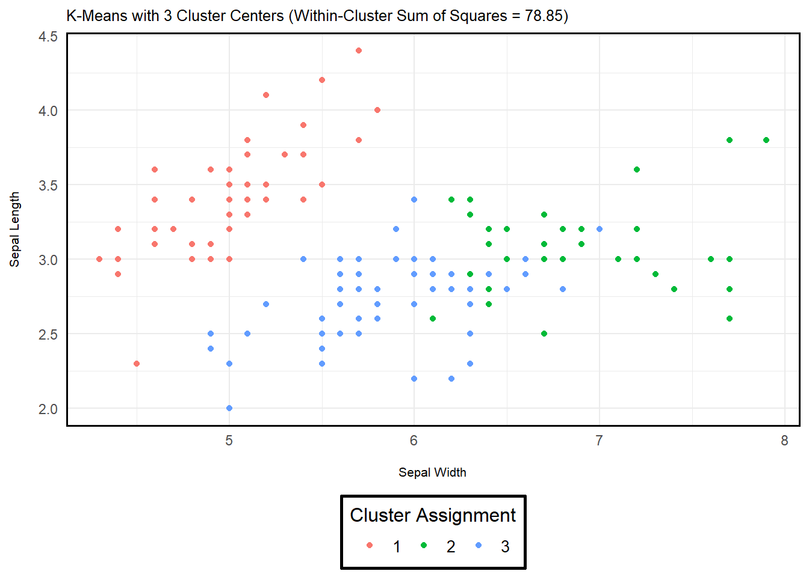

Clustering
POS6933: Computational Social Science
Truscott (Spring 2026)
Clustering
In clustering, we assume that some latent structure – in this case, a discrete grouping or classification – organizes the observed data. It conditions latent group membership to explain patterns in lexical variance, estimating the grouping that makes the observed text data most probable. It is generally unsupervised in that, unlike dictionary-based methods where we explicitly encode how our models should classify certain words, clustering algorithms do not rely on predefined labels or lexicons. Instead, they infer latent group structure directly from patterns in the data, allowing word usage and co-occurrence to determinate how documents are grouped.
K-Means Clustering
As GSR (Ch. 12) note, k-means clustering is one of the most widely used clustering algorithms. We’re not going to spend a whole lot of time on walking through the equation(s) with example data like we’ve done with previous topics, largely because k-means is best understood as an iterative “rinse-and-repeat” procedure with several researcher-driven choices regarding initialization and optimization. A few notes:
K-means make hard assignments (or one-hot encodings) of cluster assignment – i.e., each document is assigned to only one category (for example, if we assume K = 4, only a single element of \(\pi_i\) will equal one – the rest will be 0).
Importantly, k-means clustering is not something where there is usually a single definitive answer. Rather, the goal is to minimize the global objective function (typically the within-cluster sum of squared distances), but there is no guarantee it will ever be recovered from any particular iteration. Instead, the algorithm may converge to a local optimum (a stable solution that satisfies the convergence criterion but doesn’t fully minimize the function globally). This convergence generally happens when successive iterations produce negligible changes in cluster assignments from partitions (\(\pi\)) or cluster centers (\(\mu\)).
In essence, k-means clustering has an assignment step that assigns each document to the closest cluster center (\(\mu_k\)) based on some distance metric (GSR use squared Euclidean distance in Ch. 12), as well as an update step that recomputes each cluster center as the mean of all documents assigned to that cluster. All of this is in pursuit of the objective function (minimizes the sum of the squared distance) and will repeat the loop until convergence.
K-Means Analogy
Imagine you get a call from your parents that they would like help organizing their collection of DVDs, which they would like to organize based on similarity in style or genre. Each film has various features: comedy, drama, and action, though most of these features aren’t mutually exclusive (e.g., some films can be both romantic and funny).
To get started, we assume that there are 3 groups (comedy, drama, and action) and place placards on the loor representing the “prime location” for each genre. These placards correspond to the cluster centers (\(\mu_k\)) for each genre, meaning that if a film is placed directly on that placard, it would represent the average movie for that group (ex: placing a film directly on the action placard means it represents the average action movie).
Next, we randomly scatter the DVDs on the floor. This sets up the initial assignment step, where each movie is assigned to the nearest cluster center (placard) based on its features. Because the initial placement is random, many DVDs will likely be far from their “true” cluster center.
Once all films are assigned, we recalculate the cluster centers. Each placard is moved to the average position of all the films currently assigned to that cluster. This updated position now better represents the “average movie” for the cluster.
We then repeat the assignment step, reassigning each film to the nearest updated cluster center, followed by recomputing the cluster centers again. This iterative process continues until the assignments and cluster centers stop changing significantly, meaning the algorithm has converged. At convergence, each film belongs to the cluster closest to it, and each cluster center represents the “average movie” for that group.
In short: a film that is (hypothetically) 30% Comedy, 60 % Drama, and 10% Action should more readily cluster with other dramatic films because cluster assignment is based on proximity to \(\mu_k\) – the more a film aligns with a cluster’s center, the more likely it is to be assigned to that cluster.
K-Means Example
Below are two example implementations of k-means in R
using the iris dataset (a built-in dataset of iris flowers
from three species). The only difference between the two being the
number of assigned cluster centers (\(K\) = 3 or 4). As you can see, adding
another cluster affects the objective function – i.e., the sum of
squared differences is reduced. However, I want to emphasize that we may
not want to read too much into this. Adding more clusters is going to
reduce the objective, but that doesn’t necessarily imply a better or
more meaningful solution. Especially with text data, it’s important to
be holistic in your assessment of clustering – GSR Ch.
12.4-12.5 does a great job discussing this!
data <- iris %>%
rename(sepal_length = Sepal.Length,
sepal_width = Sepal.Width,
petal_length = Petal.Length,
petal_width = Petal.Width) %>%
select(sepal_length, sepal_width, petal_length, petal_width)
kmeans_example <- kmeans(data, # Iris Data
centers = 3, # Cluster Centers (3 Defined)
nstart = 25) # No. Independent Runs
kmeans_example$tot.withinss # Within-Cluster Sum of Squares (Dispersion Measure)## [1] 78.85144
Clustering Components
As GSR note (and I imply above), clustering algorithms are holistically a bit different than other concepts we’ve discussed so far. Perhaps the most notable difference is that, unlike other circumstances where we (more or less) implicitly know which models are built to conform to certain data generating processes, clustering algorithms like k-means offer a lot of flexibility in how you may wish to view notions of (dis)similarity, iteration, and what a “correct” configuration might look like.
Document (Dis)Similarity: While k-means uses the squared Euclidean distance as a means to discern similarity (which also implicitly defines dissimilarity…), there are several alternatives – including cosine similarity and Manhattan distance. Interestingly, the common practice (as you may have inferred from some of our other readings) is to effectively benchmark different approaches and compare their performance given a set of metrics (More Next). For instance, you can compare the dispersion between documents among shared clusters, as well as conduct qualitative checks to confirm that words/documents grouped together among alike clusters seem reasonably alike.
Measure of Partition Quality: Since clustering is unsupervised and we’re not assessing model fit for a known data generating processes, assessing whether a cluster partition for any iteration or series of iterations from a certain optimization strategy is “good” is inherently relative (and comparable to other iterations/strategies). As noted in (1) above, common diagnostics focus on some combination of within-cluster cohesion (e.g., summing each document’s dissimilarity from its cluster center) to test whether the partition actually groups alike documents effectively, as well as qualitative assessments of how documents are grouped. In short, the latter emphasizes a smell test – i.e., *is it reasonable and defensible that these documents should inhabit a similar cluster?” This isn’t algebra – multiple solutions are reasonable acceptable here!
Optimization Algorithm: Again, this is not a situation where there is invariably one correct answer. There is a global maximum (which is theoretically the best possible configuration, but using brute force to locate such a configuration given the ridiculous volume of possible configurations makes it very unlikely we can run every iteration and associated configuration to confirm it. Instead, we generally stop iterations once the difference between iterations is minuscule or insufficient – it doesn’t mean we’ve located the global maximum, but rather that this local optimum is nevertheless a great solution. A good test of quality re: optimization is to (a) change the starting values, (b) the optimization algorithm, and/or (c) change the convergence threshold and see what changes emerge in the clusters. If the difference in the clusters (i.e., the documents in them or the dispersion of the cluster centers) is in the same ballpark as a previous (series of) configuration(s) (ex: Tables 12.3 and 12.1 in GSR Ch. 12), then you’re probably in good shape!
Other Clustering Considerations
Algorithmic v. Probabilistic: K-means is an example of an algorithmic clustering strategy in that it assigns each document deterministic to the nearest cluster centroid, aiming to minimize the sum of squared distances. Alternatively, probabilistic models like mixture models the documents as coming from a mixture of probability distributions, where each point has some probability of belonging to each cluster. There are tradeoffs to both (some of which are explored in subsequent points…), but a good rule of thumb is to acknowledge that if you want fast, interpretable, and deterministic (yes or no) clusters, stick if algorithmic like k-means. If you want something a bit richer with an assumption that clusters or group alignment needs some nuance or uncertainty, probabilistic may be the way to go.
Soft v. Hard Partitions: K-means uses hard partitions to assign documents to the nearest cluster centroid. In short, if each document was represented as a vector with length \(K\), only one element would be (1), the rest would be (0). Alterntively, soft partitions allow for uncertainty given probabilistic clustering. Yet, as GSR note, the difference is less significant than it may seem. Like hard partitions, soft (fuzzy) clustering methods align documents toward the nearest cluster – meaning that each document is likely to have a greater probability of aligning with one cluster than any of the others.
Means v. Mediods: This basically just concerns the difference between assessing cluster means versus cluster medians. In the sense of k-means/mediods, its the difference between measuring (a) the location of the average document in the cluster, or (b) the document that minimizes the distance to all others in the cluster. Much like concerns re: sampling populations, means are much more sensitive to outliers – while medians (mediods) can theoretically omit the average behavior we’re actually interested in.
Flat v. Hierarchical: Flat clustering methods (like k-means) produce a single-level partition of the data into a fixed number of clusters. Hierarchical clustering produces a nested tree of clusters, either by successively merging individual observations or recursively splitting the dataset. The former starts with many individual clusters and attempts to aggregate across successive iterations, while the latter does the opposite – it tries to split clusters through iteration. Both offer inferential value for studying clusters at various levels of granularity (from broad groupings to subclusters).